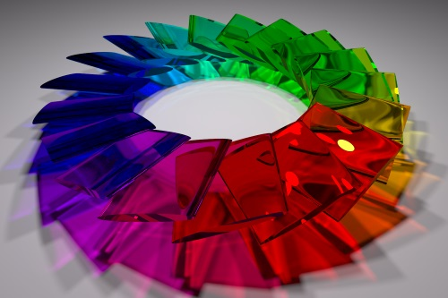

Blog of Matthew Daws
Jam 2015 Round 1B
Busy at 5pm Saturday when this ran (so all the eggs in the final basket of round 1C). Under timed conditions, I did problem A very slowly, and B-small in the time, so would have qualified at around place 770. B-large took a bit longer, and Problem C wasn't really looked at in the time limit. Hard problems...
As ever, links to: Official Contest Analysis and my code on GitHub.
Problem A, Counter Culture: How fast can you get from N from 1 if you are allowed moves of: say one more than the last numbers; or reverse the decimal number. E.g. 1, 2, 3, 4, 5, 6, 7, 8, 9, 10, 11, 12, 21, 22, 23 is the quickest route to 23.
Codingame
I've spent some time on Codingame which is an on-line Competitive programming site, based around computer games. (Though only loosely: some puzzles are just puzzles like Google Code Jam, and the "games" are often pretty obviously graph or search based puzzles). But it's kind of fun: certainly the more interactive puzzles, where your solution has to respond to unknown, almost real-time, inputs, is entertaining.
Read More →LuxRender of my profile picture

As a change, here is a puzzle I never quite got to the bottom of a few years ago. Just some flattened disks arranged in a circle and then rendered using LuxRender. I rather like the effect. There are two ways to make a cylinder shape: either use the inbuilt primitive objects (so a cylinder with disks top and bottom) or export a cylinder from Blender as a mesh. Actually, I rolled my own using a python script:
Read More →Jam 2013 Round 1B
As ever, links to: Official Contest Analysis and my code on GitHub.
I did this under timed conditions, and would have just qualified. A silly error was all which stood between B large and me...
Problem A, Osmos: Start with A and \( (x_i)_{i=1}^N \) integers. You can absorb one of the \( x_i \) if it's smaller than A, and then A grows by \( x_i \). Help Armin to be able to absorb all the numbers by adjusting the initial set:
- You can add any new number;
- You can remove a number.
What is the least number of moves to get a valid set?
Read More →Jam 2015 Round 1A
So, I didn't do this one live, as it ran at 2am UK time... I did however, for fun, try this under timed conditions a few days later, and I didn't do great, but got enough to qualify (did A and B with 3 silly mistakes from B, then C small, and stupidly didn't think, and tried my slow algorithm on C large. As large problems are one-shot, it would have been game over, and I'd be around 500 in the ranking.)
As ever, links to: Official Contest Analysis and my code on GitHub.
Problem A, Mushroom Monster: Easy, and my solution doesn't differ from the official analysis.
Read More →Jam 2014 Round 1C
As ever, links to: Official Contest Analysis and my code on GitHub.
What did you need to do to progress? Score 30 points in 100 minutes, or more points. So doing problems A and B would be enough. Again, tackling the "small" problems quickly is worthwhile.
Problem A, Part Elf: At generation 40, everyone is 1 or 0 elf. So at generation 39, everyone is \( \frac12 (a+b) \) elf, where \( 0 \leq a,b \leq 1 \). By induction, at generation \( 40-n \) everyone is \( a/2^n \) elf, for some integer \( 0 \leq a \leq 2^n \). So read in P and Q, use Euclid's algorithm to find the gcd and hence write P/Q in lowest terms, and then we need \( P/Q = a / 2^{40} \) so Q should be a power of 2, less than or equal to 40, and we need \( P \leq Q \).
Jam 2013 Round 1A
As ever, links to: Official Contest Analysis and my code on GitHub.
I did this under timed conditions: a mild disaster, but then it was for everyone back in 2013. If I had been clinical, I could have solved A, B-small and C-small, which would have been enough.
Problem A, Bullseye: Draw some concentric rings, with a fixed amount of paint. A bit of maths shows that ring \( n \in \{1,2,3,\cdots\} \) uses \( 2r+4n-3 \) units of paint, so we want the maximal \( N \) with \[ t \geq \sum_{n=1}^N 2r+4n-3 = 2rN + 2N(N+1) - 3N. \]
Read More →Jam 2014 Round 1B
As ever, links to: Official Contest Analysis and my code on GitHub.
Of current interest is how to progress: top 1000 people go through, and for that you'd need 42 points in any time faster than basically the whole 2.5 hours. This seems more reasonable...
Problem A, The Repeater: Given some input strings and Omar can make a move: he can pick one string, and one character in that string, and either repeat it once more (so "abc" -> "abbc" or "aabc" or "abcc") or if the character is already repeated, he can delete one copy (so "aabcc" -> "abcc" or "aabc"). Can he make all the strings the same, and if so, what's the minimal number of moves to do so?
Read More →